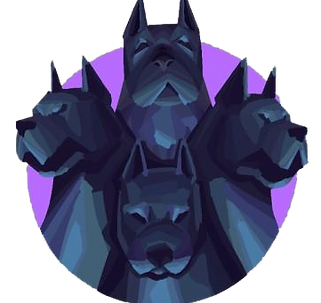

Reconnaissance Optique de Caractères (OCR) - Sudoku by KMTXcorp
~ Description du projet ~
~ Compétences travaillées ou acquises ~
- Apprentissage de l'utilisation de pointeurs - Apprentissage de l'utilisation de listes chaînées - Apprentissage de l'utilisation de l'allocation dynamique de mémoire

C#erberus Projet by KMTXcorp
~ Description du projet ~
C#erberus est un projet réalisé par le groupe KMTXcorp entre le mois de Janvier 2021 et de Juin 2021.
Ce projet a été réalisé en C# (Csharp) par un groupe de quatre étudiants dans le cadre du projet de Semestre 2 de l'EPITA.
Ce projet avait pour objectif de réaliser un jeu vidéo. Ce jeu vidéo était un jeu de type survie inspiré de plusieurs jeux célèbres comme GTA, Minecraft ou encore Unturned.
~ Compétences travaillées ou acquises ~
- Programmation orientée objet (POO) - Programmation en C# - Travail en groupe